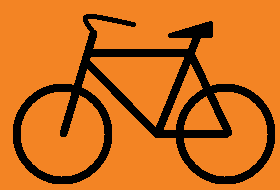

|  |
Kerékpáros KRESZ |
Kerékpározás előtt
Járművezetésre alkalmas állapotban kell lenni.
Ismerni kell a KRESZ-t.
KRESZ által előírt kötelező kerékpár-tartozékok
Borostyánsárga színű küllőprizma legalább az első keréken, melyet kiegészíthet vagy helyettesíthet az abroncson lévő reflexcsík.
Fehér vagy kadmiumsárga fényt adó első lámpa, ami villogó is lehet. Fehér színű első fényvisszaverő.
Csengő.
Két egymástól független fék.
Piros fényt adó hátsó lámpa, ami villogó is lehet.
Piros színű hátsó fényvisszaverő.
Kötelező még:
Fényvisszaverő ruházat lakott területen kívül az úttesten éjszaka vagy rossz látási viszonyok között.
Sisak használata lakott területen kívül 40 km/h feletti sebességgel haladás esetén.
További szabályok
Tilos a kerékpárhoz oldalkocsit, illetve egyéb vontatmányt kapcsolni a kerékpár-utánfutó kivételével.
Tilos kerékpáron ülve állatot vezetni.
Tilos a kerékpárt más járművel vontatni.
Tilos elengedett kormánnyal kerékpározni.
Kerékpáron csak olyan csomag szállítható, amely a kormányzást nem akadályozza.
Tilos autópályán és autóúton kerékpározni, továbbá ott, ahol ezt tábla tiltja. 12 év alatti gyerek főútvonalon nem kerékpározhat.
A kerékpárosnak is, mint minden járművezetőnek, jeleznie kell minden irányváltoztatási szándékát, mégpedig balra kanyarodva bal, jobbra kanyarodva jobb kézzel. Az irányjelzést az irányváltoztatás előtt megfelelő távolságban és időben kell megkezdeni!
Kétkerekű kerékpáron 16. életévét betöltött személy szállíthat 10 évnél nem idősebb, a kerékpárt nem hajtó utast a kerékpár pótülésén. Kettőnél több kerekű kerékpáron 17. életévét betöltött személy szállíthat a kerékpárt nem hajtó utast. Utast tehát csak az erre a célra kialakított pótülésen szabad szállítani kétkerekű kerékpáron - ha több ilyen ülés van, akkor akár több gyereket is magunkkal vihetünk.
Kerékpárral lakott területen belül legfeljebb 40 km/h sebességgel szabad közlekedni. Lakott területen kívül sisakban 50 km/h a megengedett legnagyobb sebesség, de csak ha utast nem szállítunk, sisak nélkül pedig 40 km/h.
Kerékpárúton 30 km/h, gyalog- és kerékpárúton 20km/h a megengedett maximális sebesség.
|
| |